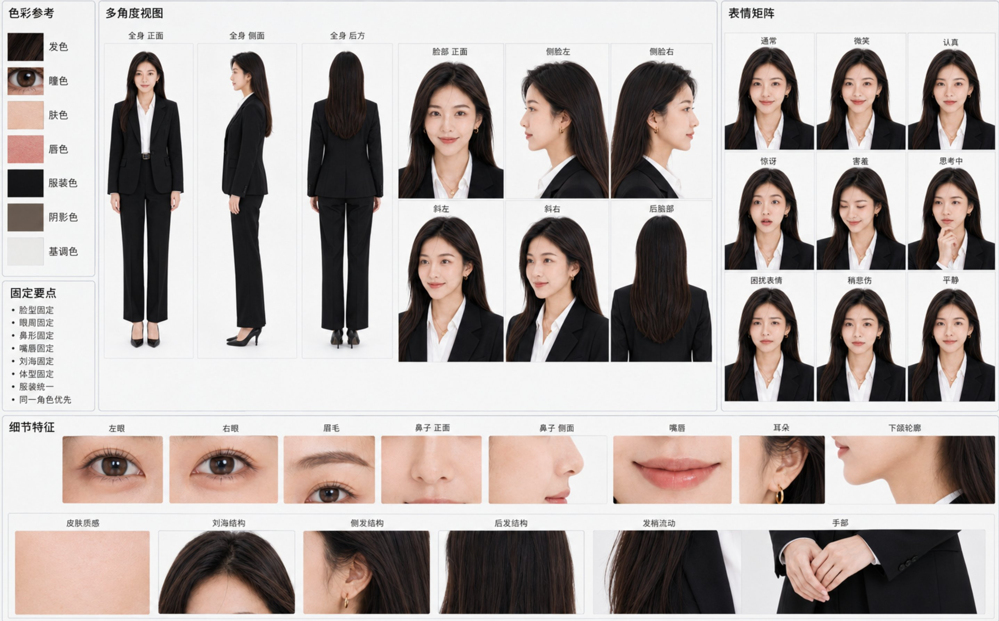

X｜Mr.pinecone：GPT Image 2 角色身份固定參考圖表提示詞

Mr.pinecone（@Mrpinecone888）在 X 分享一段「角色身份固定參考圖表」提示詞，目標是把一張角色原圖轉成 16:10 的角色資料板，讓後續多圖生成更容易維持同一角色，而不是生成多個相似人物。
圖片內容
保存圖片是一張淺灰白背景的角色參考板：左側是「色彩參考」，包含發色、瞳色、膚色、唇色、服裝色、陰影色、基調色；下方是「固定要點」，列出臉型固定、眼周固定、鼻形固定、嘴唇固定、劉海固定、體型固定、服裝統一、同一角色優先。
中央是「多角度視圖」：全身正面、全身側面、全身後方、臉部正面、側臉左、側臉右、斜左、斜右、後腦部。右側是「表情矩陣」：通常、微笑、認真、驚訝、害羞、思考中、困擾表情、稍悲傷、平靜。底部是「細節特徵」，包含左眼、右眼、眉毛、鼻子正面、鼻子側面、嘴唇、耳朵、下頜輪廓、皮膚質感、劉海結構、側髮結構、後髮結構、髮梢流動、手部。
Prompt 結構
這段提示詞可拆成 5 個模組：
- 版面任務：建立橫向 16:10、淺灰白背景、專業資料板。
- 身份硬約束：鎖定臉部比例、五官、髮際線、年齡印象、骨架、服裝、畫風與光線。
- 多角度輸出：全身、臉部、側臉、斜角與後腦部。
- 表情矩陣與身份錨點：在不改變瞳孔、鼻形、唇形與臉型的前提下產生表情與細節拆解。
- 負面提示：避免不同人物、身份漂移、換臉、五官錯位、側臉崩壞、手部錯誤、風格轉換、英文/亂碼文字與水印。
官方來源查核與限制
OpenAI 圖像生成文件說明，`gpt-image-1` 與後續模型可做 image generation / edit；但文件也標註一致性限制：模型雖可生成 consistent imagery，但對 recurring characters 或 brand elements 的視覺一致性仍可能偶爾失敗。因此這類「角色身份固定參考圖」很適合作為降低漂移的前置資料板，但不能保證後續所有圖都 100% 鎖定同一角色。
實務用法
- 先產生角色資料板，再把資料板當後續生成的 reference image。
- 後續每張圖只描述場景、姿勢、鏡頭，不反覆改寫臉型與髮型。
- 對真人肖像、未成年人、名人或商標角色，要先處理肖像權、授權與平台政策。
- 若資料板中文標籤錯字或亂碼，應人工重排或用設計工具修字，不要把錯字當最終教材。